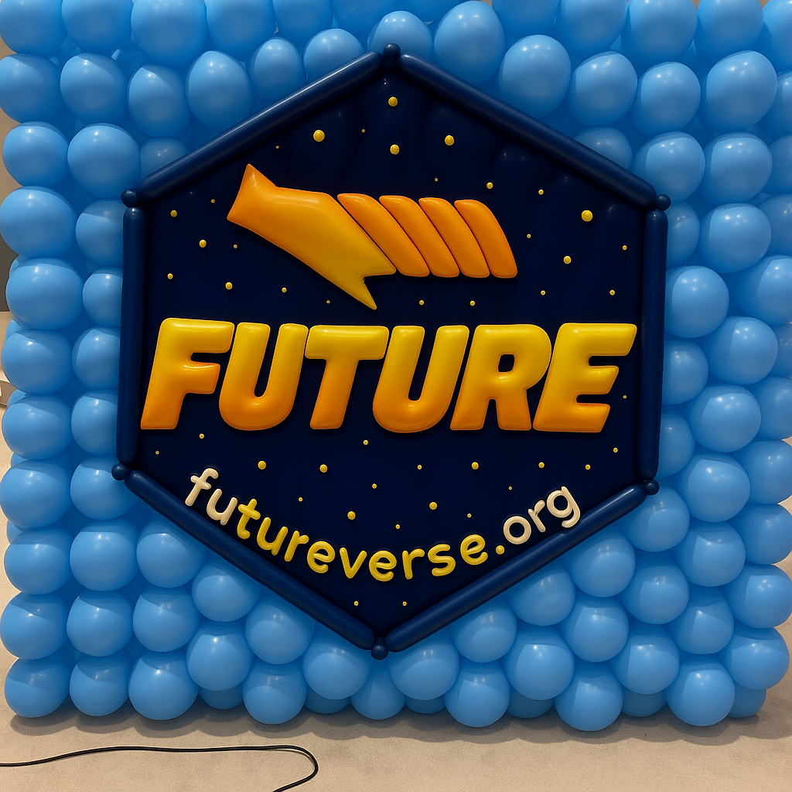
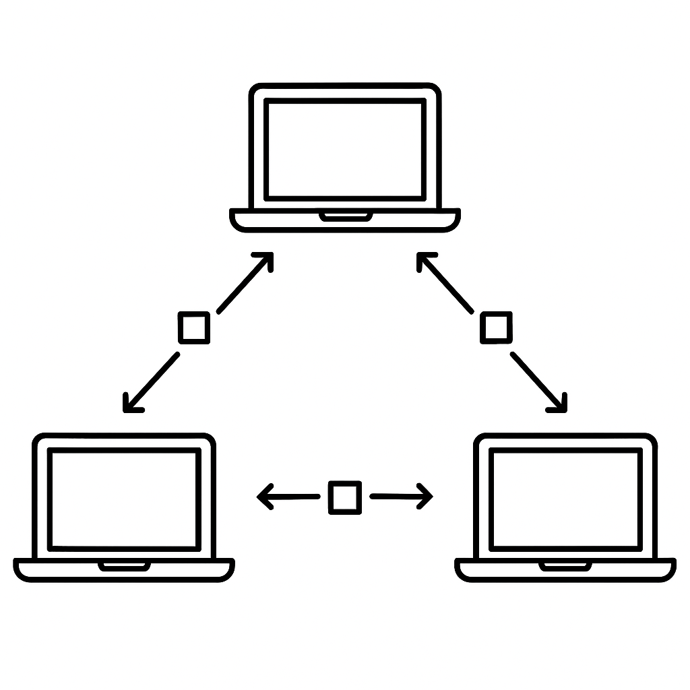
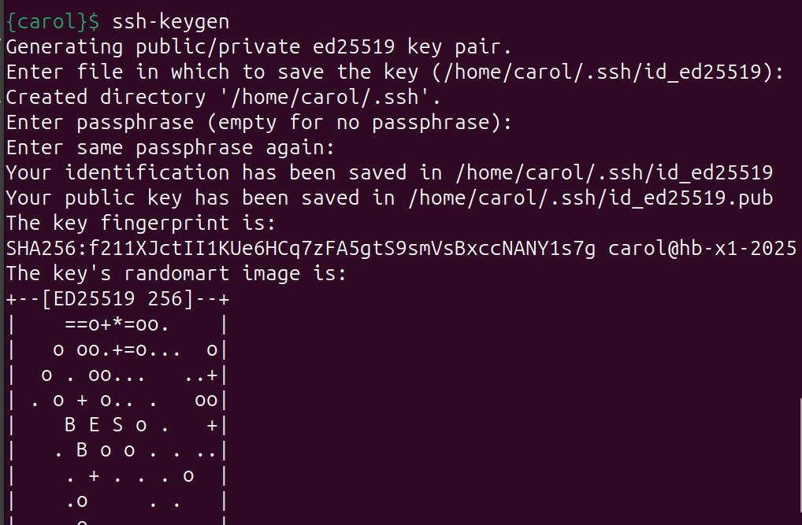
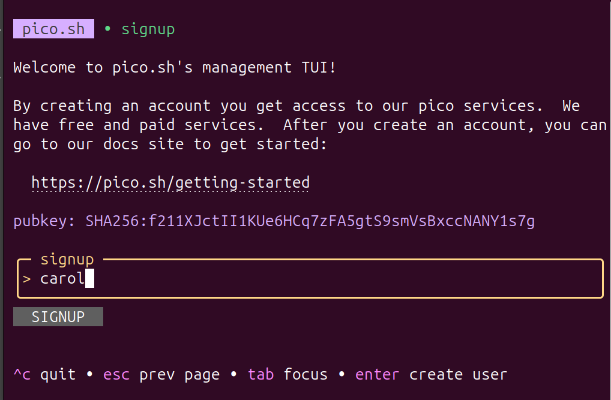

a <- 1 + 2
Futureverse P2P:
Peer-to-Peer Parallelization in R
- Share compute among friends across the world
Henrik Bengtsson
University of California, San Francisco
R Foundation, R Consortium
@HenrikBengtsson


useR! 2025, Durham, NC, USA (2025-08-10)
Future … what?
An R assignment:
A future-value assignment:
f <- future({ 1 + 2 })
a <- value(f)x <- 1:10
b <- slow_sum(x)x <- 1:10
f <- future({ slow_sum(x) })
b <- value(f)Future … why? (bc enables parallel processing)
Two calculations:
Total time: 2 mins
=> futures are the core building block for parallel processing
Futureverse allows you to stick with your favorite coding style
Parallel alternatives to traditional, sequential functions:
Ten-Year Anniversary (future 0.6.0 released June 2015)

future logo: Dan LaBar, ggplot2 logo balloon wall: Greg Swinehart & Hadley WickhamuseR! 2016 at Stanford, CA, USA
useR! 2016 at Stanford, CA, USA
useR! 2016 at Stanford, CA, USA
useR! 2016 at Stanford, CA, USA
useR! 2016 at Stanford, CA, USA
future.p2p: sharing compute among friends - it’s easy!
library(future.apply)
plan(future.p2p::cluster, cluster = "alice/friends")
y <- future_lapply(xs, slow_sum)
A P2P cluster has two components
Message Board
Used to announce futures and offers to do work
(centralized; lightweight - only metadata)
P2P file-transfer protocol
Used to send futures to workers and receive results
(peer-to-peer; full-size data transfers)

To join a P2P cluster you need an account
All P2P cluster users need an pico.sh account to access the message board:
1. ssh-keygen

2. ssh pico.sh => pick a username

That’s it!
Alice hosts a P2P cluster
Alice sets up P2P cluster and gives ‘bob’ and ‘carol’ access:
This is basically setting up a shared message board.
Q. What happens if Bob tries to use the P2P cluster?
Nothing - it will get stuck! Why?
Contributing P2P workers is easy!
Setup can be done from the terminal
Setting up a P2P cluster:
Starting P2P workers:
=> A shared P2P cluster with 6 workers. More can be added at any time!
High latency but also high throughput
-
High latency:
roundtrip takes time, because p2p file transfers take time
Example:
1+2takes 2-10 seconds to send, evaluate, and returnJust a prototype, so this will be improved
-
High throughput:
any number of users and workers can join
a public P2P cluster could have 1000’s of P2P workers
P2P computing requires mutual trust
What if?
Some technical mitigations:
End-to-end encryption
-
Run workers in sandboxed environments, e.g. process futures
- in a Linux container, or
- in a virtual machine
See parallelly package for some examples
=> I encourage work on these topics - it’s challenging, but important
… and fabulous
Stay tuned for exiting Futureverse improvements
On the horizon
Custom random number generators (RNG) [together with Ralf Stubner]
-
Resource specifications, e.g.
- avoid memory overuse, e.g.
memory=2*GiB - distribute to proper machines, e.g.
memory=2*GiBandgpu
- avoid memory overuse, e.g.
In the near future
- If you think furrr and future.apply are neat - just wait!
Thank you and may the future be with you!
- It’s easy to get started - just try it
- Support: https://github.com/HenrikBengtsson/future/discussions
- Tutorials: https://www.futureverse.org/tutorials.html
- Blog posts: https://www.futureverse.org/blog.html
- More features on the roadmap
- I love feedback, ideas, and bug reports 💜